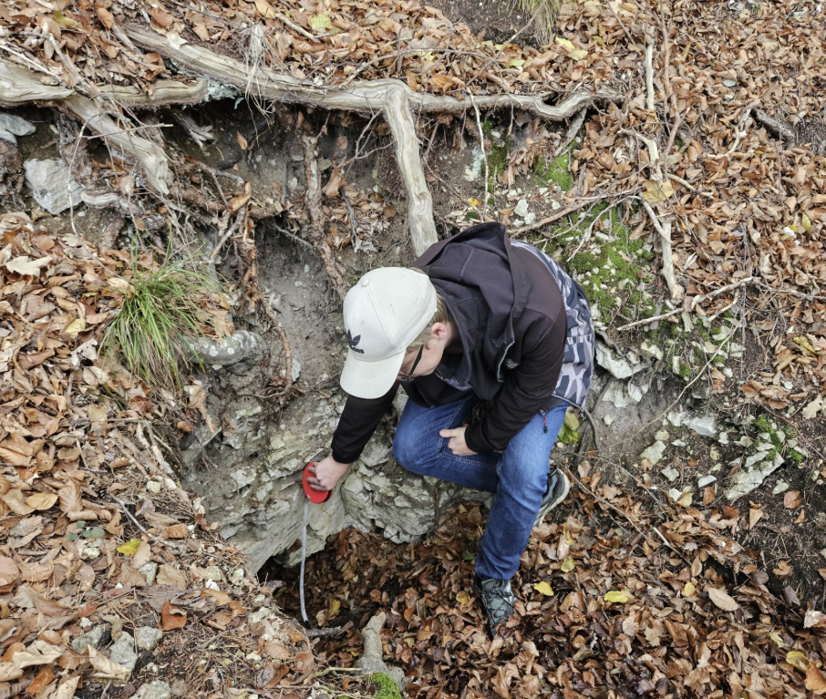
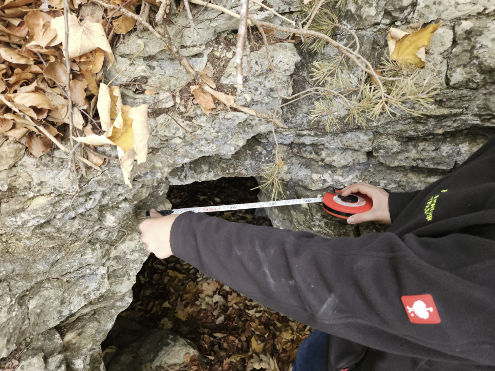

An einem sonnigen Nachmittag im November haben wir das Banzenloch in der Nähe
von Arnegg besucht. Bei dieser kleinen Exkursion wollten wir die Höhleneingänge
vermessen, um unsere späteren Konstruktionen akkurat herzustellen.
Zu viert machten wir uns auf den Weg Richtung Blautal. Vom Parkplatz aus war
es eine kleine, sehr idyllische Wanderung bis zum ersten Höhleneingang, der etwas
abseits vom Weg lag. Mit einem Maßband und etwas Rumkriechen auf dem Waldboden
konnten wir den ersten kleinen Höhleneingang problemlos vermessen. Der Zweite,
Größere war ein wenig komplizierter, da es etwas schwerer erreichbar war.
Aber auch hier konnten wir schließlich an unsere Messwerte kommen. Der dritte
Höhleneingang lag etwas abseits und wir mussten ein wenig aufpassen, dass wir
etwas Abstand zum steilen Abhang halten.

Ein kleinerer Eingang

Am Haupteingang
Während des knapp dreistündigen Unterfangens
hatten wir das Privileg einer konstanten musikalischen Untermalung durch einen
LKW-Fahrer, der 200 m Luftlinie entfernt an der Landstraße geparkt hatte und sein
Radio auf Lautstärken eingestellt hatte, die eigentlich für ein Autoradio nicht
erreichbar sein sollten. Die ausschließlich KI-generierten Songs waren sicherlich
nicht störend für die Wildtiere in der Region oder die unschuldigen Kühe auf der
20 m entfernten Wiese. Dennoch war die Exkursion ein voller Erfolg und wir konnten
die Messwerte später zur Konstruktion unserer Stahlrahmen verwenden.